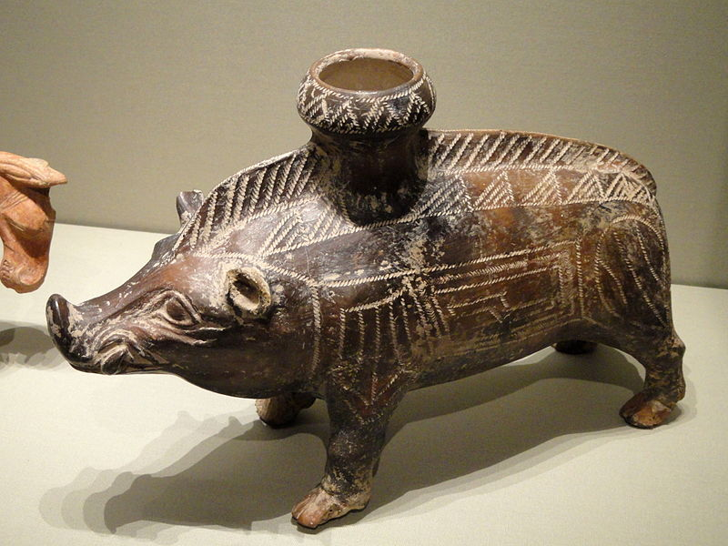

IHOB: International House Of Boar vessel 600-500 bc etruscan ceramic
IHOB: International House Of Boar vessel 600-500 bc etruscan ceramic
boar vessel 600-500 bc etruscan ceramic

Arte Etrusco de un jabalí - En el museo del arte de cleveland, Ohio, EEUU.
Cerámica Etrusca
La cerámica etrusca propiamente dicha es de barro negro (búcchero nero) no barnizado y tiene ornamentación geométrica sencilla,
incisa a mano o con punzón en los vasos más antiguos, y escultórica o de relieve en otros posteriores desde el siglo VI a. C. Entre
estos últimos se hallan la mayoría con formas de peces, mascarones, etc. o rematando en figura de cabeza humana. Otras vasijas que han pasado como etruscas por haber sido halladas
en la antigua Etruria y que ostentan figuras mitológicas de color negro sobre fondo rojo oscuro son en realidad griegas.
Pero las hay etruscas de imitación griega, menos arcaicas que las otras y correspondientes al siglo III a. C.
Emplearon también los etruscos su cerámica para sarcófagos y decoraciones arquitectónicas.